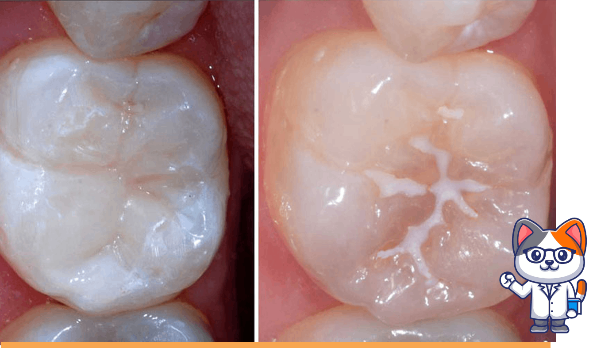
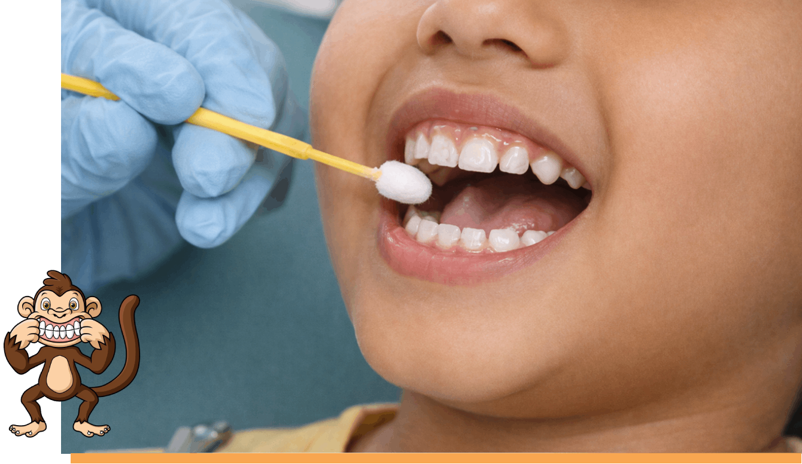
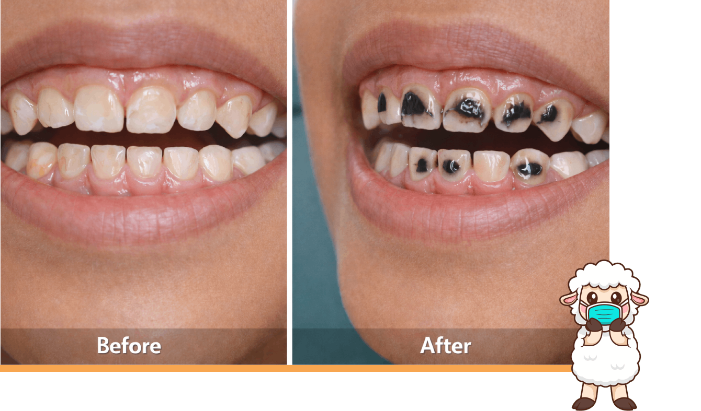

Preventive Dentistry
Preventive Pediatric Dentistry/ Preventive Dental Care
The foundation of a healthy smile begins with prevention.
At Kiddoz Dental World, we focus on identifying dental problems before they develop into
serious
conditions.
Preventive pediatric dentistry includes:
Comprehensive oral examination
Early detection of cavities
Monitoring tooth and jaw development
Oral health risk assessment
Professional cleaning and polishing
Fluoride protection
Children’s teeth are more vulnerable to decay because of their thinner enamel and dietary habits. Regular check-ups allow Dr. Nipun Jain to detect any early signs of tooth decay or gum problems and take immediate action.
This approach helps your child avoid pain, prevents emergency treatments, and builds a strong oral health foundation for life. Dental Check-Ups
At Kiddoz Dental World, a dental check-up is not a scary experience — it is a fun and positive one.Each visit for Dental check up is designed to be:
-
Stress-free
-
Comfort-oriented
-
Informative
-
Fun for the child
Dr. Nipun Jain uses the “Tell – Show – Do” technique — explaining the procedure in child-friendly terms, showing instruments as toys, and then performing the treatment gently.
During a routine check-up, the following is evaluated:
- Tooth eruption pattern
- Cavities or early decay
- Gum health
- Bite alignment
- Oral hygiene habits

Pit & Fissure Sealants
Children’s back teeth (molars) have deep grooves where food and bacteria easily get trapped, making them highly prone to cavities.
Pit & Fissure Sealants are a simple, non-invasive treatment that significantly reduces the risk of cavities during the growing years. It is one of the best preventive measures for school-going children.
Fluoride Therapy
Fluoride strengthens teeth and makes them more resistant to decay.
Fluoride treatment helps repair early microscopic damage, and strengthens weak enamel. At Kiddoz Dental World, fluoride application is completely safe for children and is especially recommended for children who are more prone to cavities or have a history of tooth decay.


Silver Diamine Fluoride (SDF) Treatment
For children who are very young, anxious, or uncooperative, or for those with active cavities, we also offer Silver Diamine Fluoride (SDF) therapy. SDF is a painless, quick, and non-invasive liquid applied directly on the decayed tooth to:
• Stop the progression of cavities • Kill harmful bacteria • Prevent further damage • Delay or avoid the need for drilling or injectionsThis treatment is especially useful for small children and special-care patients, making it a highly effective and child-friendly option in managing dental caries.